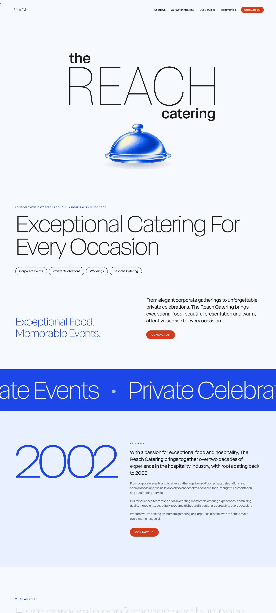
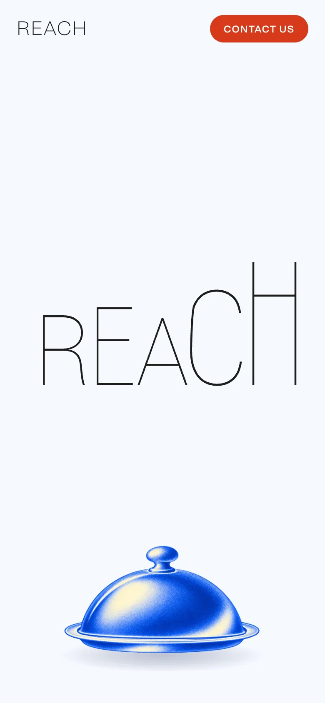

THE REACH CATERING
- Role
- Website designer
- Website
- thereachcatering.com
The Reach Catering is a hospitality extension of The Reach Riverside. I developed the brand's visual identity and positioning, translating an existing restaurant proposition into a distinct, commercially focused offering.
My work encompasses logo and icon design, art direction, website design and development, and establishing a cohesive visual language across digital touchpoints. The challenge was to create an independent, recognisable identity while retaining a clear relationship with the parent brand.
the project, in short
the challenge
Give a catering extension of The Reach Riverside its own recognisable identity, while keeping a clear link to the parent brand.
what I did
Designed the logo and icon, directed the art, and designed and built the website, so one visual language runs across every touchpoint.
the result
A live site at thereachcatering.com and an identity that stands apart from its parent while clearly belonging to it.

